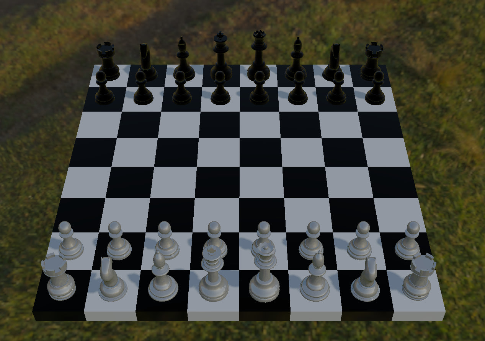

My side projects
Ray Tracer
|
Ray tracing is a popular algorithm for redering 3D scenes where propagation of light rays is simulated to determine this final color of each pixel. I wrote this to learn about global illumination. |

|
PBR Renderer
|
It's a 3D renderer I built to dive deeper into graphics programming, using as reference the great LearnOpenGL tutorial and Google's Filament. The renderer implements Physically Based Rendering (PBR), a technique that simulates light and shadows to closely mimic real-world behavior. It supports shadow mapping, Image-Based Lighting (IBL), and can load meshes from external files. |
 |
MicroTCP
MicroTCP is a user-space network stack I developed in university to better understand TCP and lower-level protocols like IP, ICMP, and ARP. It provides two interfaces: a blocking, BSD socket-like interface and a non-blocking, epoll-like interface for handling multiple connections efficiently. I tested it by porting xHTTP to it, an HTTP/1.1 implementation I wrote previously. You can also check out a discussion about it on Hacker News.
Blogtech
This is the web server used to host this blog. I wrote it to see how hard it would be to write services facing the public internet from scratch.
After writing the first prototype I hosted it on a small VPS and asked Reddit (r/C_Programming) to break it, which helped make the program more robust. One day I woke up and the server wasn't responding anymore. Turns out someone stress tested it so much during the night the log file fille the VPS hard drive. It took 3 hourds to download the 40GB log file to my machine!
After implementing log file rotation I went back to Reddit (r/hacking this time) asking people to break it again! This went better than last time.
I took some time adding HTTPS support using BearSSL (and fix some nasty bug that popped up) and posted it on Hacker News where it got quite a bit of interest. The project managed to reach the front page, which is super cool because I got to test the server with higher traffic! The server managed to serve around 70K requests the first day with no issues.
Noja
This is the first "serious" project I worked on. It's an interpreter for a high level language I designed from scratch. It taught me how to manage non-trivial codebases and how important it is to keep complexity low. The language supports features like multiple return values, default argument values, and closures. It was a great learning experience and helped me understand interpreters deeply. You can find various examples in the examples/ folder of the GitHub repository, including an HTTP server I ported to the language.